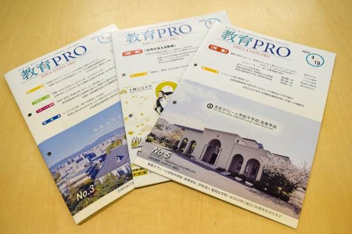

教育をサポートする
GREETING
ご挨拶
「人間教育」を柱とする教育を大切に
グローバル化とIT化が急速に進み、社会の在り方が劇的に変わる「Society5.0時代」を迎えようとしています。そして今後の教育をどう組み立てていくかは大きな課題となっています。 授業料、給食費の無償化や教員の待遇改善等のシステム的な問題が先行して大きく話題になっている一方、「どのような教育」で「どんな人間」を育てていくかという基本的課題がキャッチフレーズで終わっているように感じます。 新しい時代を生きるためにITの習得活用は最重要な課題であることは間違いありません。同時にそれを生み出し、活用するのは人間であることを忘れてはならないように思います。インターネットによる虐めや詐欺事件、フェイクニュース等はその陰の部分です。 時代がどのように進み変化しようとも「人間教育」を柱とする教育を大切にしていきたいと思います。

教育情報誌
教育PRO （編集顧問
鈴木祥一）
最新の教育事情、現場での実践例、専門家による提言など、 教育に携わるすべての方に役立つ情報を定期的にお届けします。
COMPANY
会社概要
株式会社ARP
- 設立
- 2010年9月11日
- 代表者・取締役
- 代表取締役 佐藤健一
- 顧問
- 鈴木祥一（兵庫教育大学 名誉教授）
- 住所
-
〒631-0841
奈良市青野町1-4-23 TEL：080-6166-7143 - メールアドレス
- hirokikochi@gmail.com
- 事業内容
-
- ■「教育PRO」の発行
- ■一般書、教育書（テキスト）の出版
- ■「英単語（CEFR）」検定
- ■「古典名文暗唱」検定
- ■「四字熟語・ことわざ」検定
ARP教育研究会
- 理事長
- 鈴木 祥一（兵庫教育大学 名誉教授）
- 副理事長
- 佐藤 健一（ARP 代表取締役）
- 監事
- 高橋 義信（宝塚大学 顧問）
- 代表理事
- 田中 宏（前甲南大学 教授）
- 理事
- 加藤 浩志
- 理事
- 伊藤 裕二
- 理事
- 渡辺 康夫
- 理事
- 山本 隆
- 顧問
- 中村 俊介
NPO法人ARP教育研究所 運営研究会
高大接続研究会
- 幹事長
- 小林 充
（前全国私立大学 教職課程協議会 副会長） - 代表幹事
- 加藤 浩志（桃山学院教育大学 教授）
- 幹事
- 吉田 勇
- 幹事
- 山田 太郎
- 幹事
- 佐々木 恵子
- 顧問
- 山口 昭
- 顧問
- 松本 智
- 事務局
- 井上 真理子
教師力向上研究会
- 幹事長
- 木村 拓也
（大阪大谷大学 教授） - 代表幹事
- 山本 隆
（森ノ宮医療大学 教授） - 幹事
- 林 陽子
- 幹事
- 斎藤 典子 他
- 顧問
- 清水 昭弘
- 顧問
- 岡田 和子
- 顧問
- 西村 孝男
- 事務局
- 井上 真理子
ACCESS
アクセス
〒631-0841 奈良市青野町1-4-23
TEL：080-6166-7143
BUSINESS
業務案内
学校経営・学校改革アドバイザー業務
「ことば」に関するデジタル検定
検定ラインナップ
B１レベル以上は一般の単語帳を活用ください。
・「古典名文暗唱」検定、「四字熟語・ことわざ」検定にはテキストがあります。
・合格者・準合格者には「ことば向上委員会」から認定証をお渡しします。